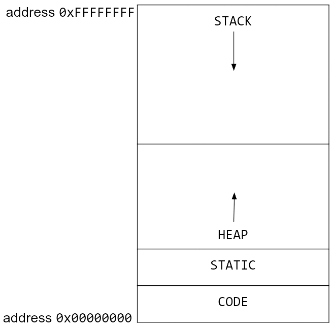

This document is an extension of Notes 5 and 6 and will focus on how you can help the JIT compiler optimize your code.
We talked before about how Julia runs code as illustrated in the following flowchart:
Julia compiler steps (courtesy of the Julia manual)
JIT Compilation Process
Type inference
Julia uses a complex algorithm to deduce output types from input types. At a high-level, it involves representing the code flow graph as a lattice with some modifications, then running operations on the lattice to determine the types of variables.
SSA (static single-assignment) conversion
SSA form
In SSA, each variable is assigned exactly once. This allows for easier optimization further down the pipeline because the compiler can reason about the flow of data more easily. For example, here is one piece of code before and after SSA:
y =1y =2x = y
A human can easily see that the first assignment to y is not needed, but it is more complicated for a machine. In SSA form, the code would look like this:
y1 =1y2 =2x1 = y2
In this form, it is clear that the first assignment to y is not needed, since y1 is never used.
Julia uses a static single assignment intermediate representation (SSA IR) to perform optimization. This IR is different from LLVM IR, and unique to Julia. It allows for Julia specific optimizations.
Basic blocks (regions with no control flow) are explicitly annotated.
if/else and loops are turned into goto statements.
lines with multiple operations are split into multiple lines by introducing variables.
functionfoo(x) y =sin(x)if x >5.0 y = y +cos(x)endreturnexp(2) + yend;usingInteractiveUtils@code_typedfoo(1.0)
Last-chance small optimizations. Fused multiply-add, …
Examples
Here are some examples of the techniques the optimization pipeline employs. There are many, many more, but these are some of the common ones as mentioned in the Julia docs:
Dead code elimination (DCE): This optimization pass removes code that is never executed.
The conditional block is never executed, so the code inside can be removed:
functionfoo(x)iffalse x +=1endreturn xend
Constant propagation: This optimization pass replaces variables with their constant values.
The following function can be simplified to return 5:
functionfoo(x) x =3 y =2return x + yend
Common subexpression elimination (CSE): This optimization pass eliminates redundant computations.
The following function may be compiled to store the value of x^2 in a temporary variable and reuse it:
functionfoo(x)return x^2+ x^2+ x^2+ x^2end
Loop unrolling: Loops traditionally have a condition that needs to be checked at every iteration. If the number of iterations is known at compile time, the loop can be unrolled to remove the condition check.
The following loop may be unrolled to remove the condition check:
a =0for i in1:4 a += iend
a =0a +=1a +=2a +=3a +=4
Loop fusion: This optimization pass combines multiple loops into one to reduce the number of iterations.
The following two loops may be fused into one:
a =0b =0for i in1:4 a += iendfor j in1:4 b += jend
a =0b =0for i in1:4 a += i b += jend
Loop interchange: This optimization pass changes the order of nested loops to improve cache performance.
The following nested loops may be interchanged to improve cache performance:
for i in1:4for j in1:4 a[i, j] = i + jendend
for j in1:4for i in1:4 a[i, j] = i + jendend
Global value numbering (GVN): This optimization pass assigns a unique number to each value computed by the program and replaces the value with its number.
After GVN, the following code can likely be optimized further by CSE (x and z can be replaced with w and y everywhere):
w =3x =3y = x +4z = w +4
w :=3x := wy := w +4z := y
Fused multiply-add (FMA): This optimization combines multiplication and addition instruction into a single instruction if the hardware supports it.
The following code may be compiled to use an FMA instruction:
mul r1, r2, r3; multiply r2 and r3 and store in r1
add r4, r1, r5; add r1 and r5 and store in r4
; this process is done in a single instruction
fmadd r4, r2, r3, r5; multiply r2 and r3, add r5, and store in r4
Techniques to help the JIT compiler
We talked last week about some techniques you can use to help the JIT compiler optimize your code, such as putting performance-critical code inside functions, avoiding global variables, typing your variables, and using the const keyword. Here are some more techniques, and you can read about many more in detail here:
There are many good tips recommended by the manual, but here are a few that I think are quite useful or surprising. Most of these boil down to type stability:
Write type-stable code
This code looks innocuous enough, but there is something wrong with it:
pos(x) = x <0 ? 0: x;# This is equivalent tofunctionpos(x)if x <0return0elsereturn xendend;
0 is an integer, but x can be any type. This function is not type-stable because the return type depends on the input type. One may use the zero function to make this type-stable:
pos(x) = x <zero(x) ? zero(x) : x;
Similar functions exist for oneunit, typemin, and typemax.
A similar type-stability issue may also arise when using operations that may change the type of a variable such as /:
functionfoo(n) x =1for i =1:n x /=rand()endreturn xend;
The manual outlines several possible fixes:
Initialize x with x = 1.0
Declare the type of x explicitly as x::Float64 = 1
Use an explicit conversion by x = oneunit(Float64)
Initialize with the first loop iteration, to x = 1 / rand(), then loop for i = 2:10
Be wary of memory allocations

Memory allocation diagram from CS61C
Heap memory allocation can be a bottleneck in your code. If you are allocating memory in a loop, you may be slowing down your code. Here is a toy code segment that repeatedly allocates memory:
functionxinc(x)return [x, x+1, x+2]end;functionloopinc() y =0for i =1:10^7 ret =xinc(i) y += ret[2]endreturn yend;
This code, while unrealistic, is a good example of how memory allocation can slow down your code. The xinc function allocates memory every time it is called, and the loopinc function calls xinc several times. This code can be optimized by preallocating memory:
functionxinc!(ret, x) ret[1] = x ret[2] = x+1 ret[3] = x+2end;functionloopinc_prealloc() y =0 ret = [0, 0, 0]for i =1:10^7xinc!(ret, i) y += ret[2]endreturn yend;
@timeloopinc()
0.405860 seconds (10.00 M allocations: 762.939 MiB, 7.85% gc time)
50000015000000
@timeloopinc_prealloc()
0.003780 seconds (1 allocation: 80 bytes)
50000015000000
Be wary of memory allocations, again
x =rand(1000);functionsum_global() s =0.0for i in x s += iendreturn send;@timesum_global()
0.010564 seconds (3.68 k allocations: 78.109 KiB, 98.37% compilation time)
493.0660016458528
functionsum_local() s =0.0 x =rand(1000)for i in x s += iendreturn send;@timesum_local()
0.000018 seconds (1 allocation: 7.938 KiB)
500.14039588612354
The global nature of x prevents the compiler from making many optimizations, especially since it is not typed. Because it is global, and x needs to persist, it requires heap memory allocation. The local version of x is typed and stack-allocated, which allows the compiler to optimize the code better. Stack allocation is usually much faster than heap allocation.
Function barriers
Try to separate functionality into different functions as much as possible. Often there is some setup, work, and cleanup to be done - it is a good idea to separate these into different functions. This will help with compiler optimizations, but it often makes the code more readable and reusable.
Consider the following (strange) code. a will be an array of Int64s or Float64s, depending on the random value, but it can only be determined at runtime. Though this is a contrived example, sometimes there are legitimate cases where things cannot be determined until runtime.
functionstrange_twos(n) a =Vector{rand(Bool) ? Int64 : Float64}(undef, n)for i =1:n a[i] =2endreturn aend;@timestrange_twos(10^6)
0.058851 seconds (999.54 k allocations: 22.883 MiB, 11.64% gc time, 12.85% compilation time)
The LoopVectorization.jl package offers the @turbo macro, which optimizes loops using memory-efficient SIMD (vectorized) instructions. However, one can only apply this to loops that meet certain conditions as outlined in the package README.
usingLoopVectorization;functionAmulB_turbo!(C, A, B)@turbofor m ∈indices((A,C), 1), n ∈indices((B,C), 2) # indices((A,C),1) == axes(A,1) == axes(C,1) Cₘₙ =zero(eltype(C))for k ∈indices((A,B), (2,1)) # indices((A,B), (2,1)) == axes(A,2) == axes(B,1) Cₘₙ += A[m,k] * B[k,n]end C[m,n] = Cₘₙendend;@timeAmulB_turbo!(rand(1000,1000), rand(1000,1000), rand(1000,1000))
For comparison, here is BLAS matrix multiplication:
usingLinearAlgebra;BLAS.set_num_threads(1);functionBLAS_mul(C, A, B) BLAS.gemm!('N', 'N', 1.0, A, B, 0.0, C)end;@timeBLAS_mul(rand(1000,1000), rand(1000,1000), rand(1000,1000))